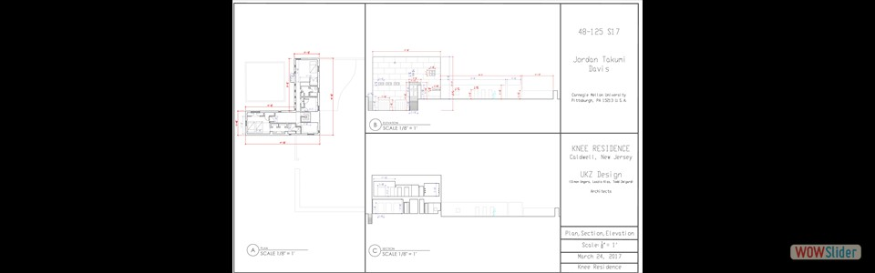

Made via Rhinoceros, Adobe Illustrator, and Adobe InDesign.
Made via Rhinoceros, Adobe Illustrator, and Adobe InDesign. Made via Rhinoceros, Adobe Illustrator, and Adobe InDesign.
Made via Rhinoceros, Adobe Illustrator, and Adobe InDesign.")
 Made via Rhinoceros
Made via Rhinoceros 
 Made via Rhinoceros and Modelo
Made via Rhinoceros and Modelo
- Made via Rhinoceros

 View") Made via Rhinoceros and V-Ray rendering.
Cohon University Center, CMU
Made via Rhinoceros and V-Ray rendering.
Cohon University Center, CMU
 Made via Rhinoceros, V-Ray, and Adobe Photoshop
Made via Rhinoceros, V-Ray, and Adobe Photoshop Made via Rhinoceros and V-Ray rendering
Made via Rhinoceros and V-Ray rendering- Made via AutoCAD
 1
1 2
2 3
3 5
5 6
6 8
8 9
9 13
13wowslider.com by WOWSlider.com v8.7